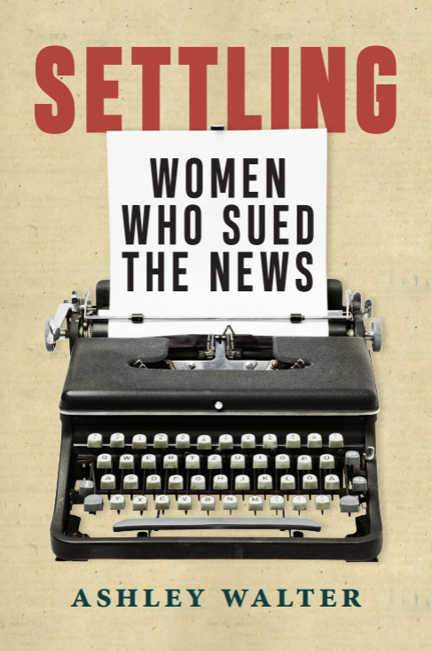

The Project
The 1970s marked a transformative era in the American workplace, particularly for women in the media. Spurred by the Civil Rights Act of 1964 and the subsequent rise of the Equal Employment Opportunity Commission (EEOC), women across the United States began to challenge entrenched patterns of sex discrimination in employment. Nowhere was this more visible—or more paradoxically underreported—than in the nation's newsrooms.
This digital archive explores the explosion of lawsuits filed under the EEOC against news organizations during the 1970s, focusing on the legal and social impact these cases had on the status of women in the workplace, media, and public life. It draws on landmark cases, oral histories, archival materials, and the broader context of the women's movement.

The Book
"Settling: Women Who Sued the News"
This digital archive serves as a foundation and companion resource for the forthcoming book Settling: Women Who Sued the News (University of Massachusetts Press, Fall/Winter 2026), part of the Journalism and Democracy series. The book examines the legal battles, personal stories, and lasting impact of the women who challenged sex discrimination in America's most powerful news organizations.
Through extensive research, oral histories, and archival documentation, the book reveals how these lawsuits transformed not only the newsrooms where they were filed but also the broader landscape of American media and public life.
The Author
Dr. Ashley Walter
Ashley Walter, Ph.D. is an assistant professor of journalism and media at Saint Louis University, where she teaches courses on media ethics, feature writing, and contemporary issues in media. She is an expert in women's media history and is the co-author of How America Gets the News: A History of U.S. Journalism (2024). Her work has been published in American Journalism, Journalism History, Media Report to Women, and the Women's Media Center. A native of Williamsport, Pennsylvania, Walter received her B.A. and M.S. from Duquesne University and her Ph.D. from Pennsylvania State University. Prior to her academic career, she worked in Pittsburgh media.
Dr. Walter's research examines the intersection of media, women's history, and civil rights law, with particular attention to the experiences of women in journalism. Her scholarship explores the ways women have navigated and challenged institutional barriers within American news organizations, contributing to broader conversations about equity, labor, and professional identity in the media industries.
Settling: Women Who Sued the News, published by the University of Massachusetts Press, is part of the Journalism and Democracy series. The book tells the story of the women who challenged sex discrimination in some of America's most powerful news organizations during the 1970s and examines the lasting impact of their legal battles on newsrooms and the journalism profession.
Dr. Walter's teaching and scholarship have received national recognition. She was awarded the Jinx C. Broussard Award for Excellence in Teaching of Media History from the Association for Education in Journalism and Mass Communication (AEJMC) in 2025. Her research has also been honored with the Maurine Beasley Award for Outstanding Paper on Women's History from the American Journalism Historians Association in 2022 and the Margaret A. Blanchard Doctoral Dissertation Prize (Honorable Mention) in 2023. In recognition of her broader professional and academic contributions, she was named among Utah State University's 50 Most Influential Aggies in 2023.
Through her research, teaching, and public scholarship, Dr. Walter is committed to advancing understanding of journalism history, media ethics, and the role of women in shaping the American press. She lives in St. Louis with her husband.
Affiliation: Saint Louis University, Department of Communication
Email: ashley.walter@slu.edu
Acknowledgments
This project would not be possible without the courage of the women who filed these lawsuits and the attorneys who represented them. We are also grateful to the oral history projects and archives that have preserved their voices and the Research Computing Group for supporting this digital archive.